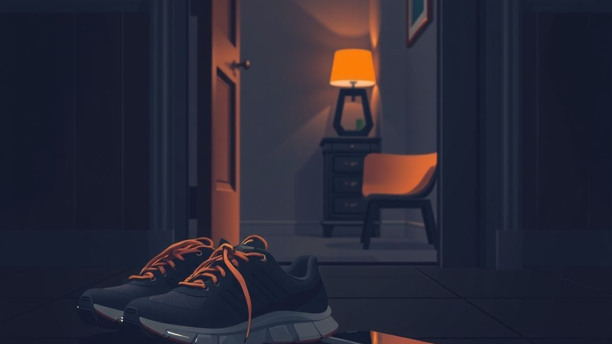
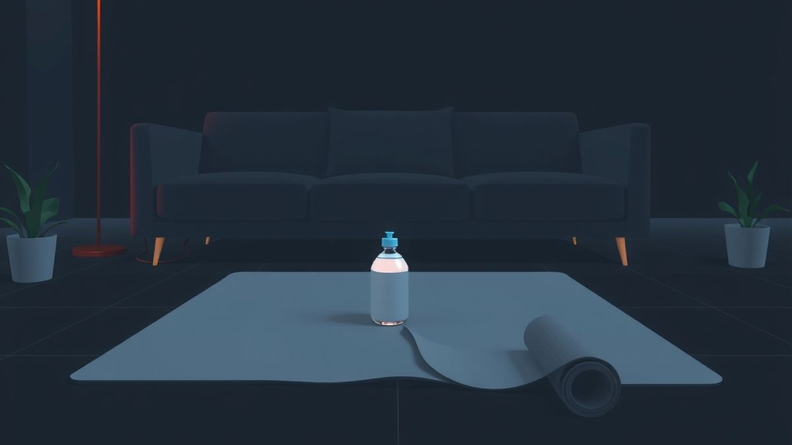

Motivation Follows Action: How to Get Motivated to Work Out
How to get motivated to work out when you don't feel like it: why waiting fails, why the feeling often shows up after you start, and a 2-minute start to use.


TL;DR
- Don't wait for motivation. In a 2013 meta-analysis, nearly half of people who intended to exercise didn't, so wanting it isn't the problem.
- The habit of starting, not the workout, predicted how often people exercised in a 2016 diary study.
- Moderate exercise tends to feel better once you're moving; going too hard makes it feel worse.
- Use a 2-minute start tied to a specific cue: shoes on, 10 squats. You're allowed to stop after.
- Rewards and tricks fade when they end. Build the start into your day, and reward coming back after a miss.
It's 6:40 p.m. Your shoes are by the door. You told yourself this morning you'd work out after dinner.
You sit down for a minute first, just until you feel like it. At 7:25 you're still on the couch, 40 minutes into someone else's workout videos.
You weren't lazy. You were waiting. And the feeling you were waiting for usually doesn't show up on the couch.
If you're searching for how to get motivated to work out, here's the uncomfortable answer: stop trying to get motivated first. Make the start so small you can do it without the feeling. For most people, the motivation tends to arrive a few minutes in.
How to get motivated to work out: start before you feel like it
The short version, before the why:
- Shrink the start to two minutes. Not "work out." Put on your shoes and do 10 squats. That's the whole promise.
- Decide the moment in advance. "After I put my plate in the sink" beats "this evening." A specific cue does the deciding so tired-you doesn't have to.
- Keep the first minutes easy. Easy enough to talk through. Hard comes later, if at all.
- Give yourself a real exit. After two minutes you're allowed to stop. Most days you won't want to. Some days you will, and that still counts.
That's the idea behind "motivation follows action." It's a slogan, not a law, and no trial has proven that starting creates motivation. But the research around it points the same way, and it explains why waiting doesn't work.
Why waiting for motivation fails
Wanting to exercise and exercising are two different things, and the gap between them is huge. A 2013 meta-analysis of studies on physical activity found that nearly half of people who intended to be active didn't follow through. The gap came almost entirely from people who meant to and didn't, not from people who never wanted to.
So wanting it more isn't the fix. You already want it. That's why the shoes are by the door.
What does predict how often people exercise? A 2016 study asked about 120 adults to keep daily exercise diaries for a month. The researchers split exercise habits into two parts: the habit of starting (deciding to go, automatically, when a cue hits) and the habit of doing the workout itself. Only the starting habit predicted how often people actually exercised.
That's the whole game. The hard part isn't the workout. It's the 30 seconds where you decide whether to begin. Make that moment automatic and small, and you stop needing to win an argument with yourself every evening. (We go deeper on building that cue in the 10-rep rule for habit stacking.)
Why you often feel better once you're moving
Here's the part of "motivation follows action" that has real evidence behind it: for most people, moderate exercise feels better once it's underway.
- A single session lifts energy. A 2006 meta-analysis of about 150 studies found that a typical bout of aerobic exercise raised people's self-reported energetic, positive feelings, while sitting in a control condition lowered them. Low-intensity sessions did especially well.
- Too hard flips it. A 2011 review of 33 studies found that pleasure mostly drops once you push past the point where your breathing gets labored and you can't keep talking. Below that, most people feel fine or good, though it varies a lot between people.
- How it feels predicts whether you come back. A 2015 review found that feeling better during moderate exercise was linked to doing more activity later. How people felt afterward wasn't. Only a handful of studies measured this, so treat it as a promising pattern, not a rule.
Put together: the feeling you're waiting for on the couch is more likely to show up five minutes into an easy session. And if you start too hard, you're training yourself to dread the next one.
This is why "just go all out" advice backfires on people who are already struggling to start. The fix isn't more intensity. It's a gentler first five minutes.
The 2-minute start: what to actually do
Pick one cue and one start. Do it the same way every time.

| Your situation | The 2-minute start | Easier version |
|---|---|---|
| Home after work, couch calling | Shoes on, 10 squats before you sit down | Stand up from a chair 10 times |
| Just woke up | 10 push-ups against the kitchen counter while the kettle heats | 10 wall push-ups |
| Stuck at a desk | A 20-second plank, then a lap of the room | Plank with hands on the desk edge |
| Late, tired, almost bedtime | One slow set of 5 squats, three seconds down | 5 chair sit-to-stands |
| Bad day, nothing left | A 10-minute walk, phone in your pocket | Walk to the end of the block and back |
Then set it up like this:
- Make it visible. Shoes by the door, mat on the floor, workout clothes on top of the pile. Remove one step between you and the start.
- Write the cue down. "After I put my plate in the sink, I put my shoes on and do 10 squats." Specific beats ambitious.
- Start easy. Breathing harder is fine. Gasping in the first two minutes isn't the goal.
- Check in at two minutes. Want to keep going? Add a set or a 5-minute routine. Want to stop? Stop, and count it as done.
- Grow it later. Once the start feels automatic, make the session longer. Not before.
Two minutes won't make you fit on its own. US guidelines recommend about 150 minutes a week of moderate activity plus muscle-strengthening on at least two days. But the guidelines also dropped the old rule that activity only counts in 10-minute chunks. Short bouts add up, which is the whole idea behind exercise snacks. The two-minute start is the door, not the house.
Form cues and safety
- Squats: feet about shoulder-width, heels down, knees tracking over your toes, sit back as if to a chair.
- Counter or wall push-ups: hands under your shoulders, body in one straight line, lower your chest toward the surface with control.
- Plank: elbows under shoulders, hips level, keep breathing.
Muscle burn is fine; sharp pain or joint pain means stop. If you're pregnant, have a heart condition, high blood pressure or an injury, or haven't been active in a long time, check with a doctor first and start with the easier versions.
What keeps you coming back (and what fades)
The research on motivation tricks is humbling, and worth knowing before you spend energy on them.
In 2021, researchers ran a "megastudy" with 61,293 gym members, testing 54 different four-week programs designed by scientists to boost workouts. About 45% of them increased gym visits while they ran, by 9% to 27%. The best one gave people small rewards for coming back after a missed workout. But only about 8% of the programs still had a measurable effect after the four weeks ended.
An earlier trial of 226 people tested "temptation bundling": an audiobook you could only listen to at the gym. Visits jumped 51% at first, then faded, especially after the holidays.
The honest takeaways:
- Tricks give you a boost, not a habit. Music, rewards and bundles help you start. They rarely keep you going on their own.
- Coming back matters more than never missing. The best-performing program rewarded the return, not the streak. That's the same idea as adjust, don't miss.
- The start has to be built in. What lasts is a cue you hit every day without deciding, which is exactly the habit the 2016 study found predicts frequency.
When it's more than low motivation
Everyone has weeks where moving feels like a chore. That's normal, and the two-minute start is built for it.
But if you've lost interest in most things, not just exercise, for two weeks or more, or you feel flat, hopeless or exhausted most days, that may be more than motivation. It's worth talking to a doctor or a mental health professional. Exercise can be part of feeling better, but it isn't a substitute for real support. If you're in the US and struggling right now, you can call or text 988, the Suicide & Crisis Lifeline, any time. Outside the US, your local emergency number or a doctor can point you to a support line.
Questions people ask
Is it bad to work out when you don't feel like it?
No, as long as "don't feel like it" means unmotivated, not sick or injured. Starting gently is usually the best way to find out which one it is. If you're running a fever, sharply sore in a joint, or unusually exhausted, rest.
How do I get motivated to work out at home?
Home removes the commute but adds the couch. Pick one spot in your home for moving, leave a mat or your shoes there, and tie your start to something you already do at home every day. Bodyweight moves like squats, push-ups and planks need no setup at all.
What if I hate exercise?
You might hate exercise that's too hard. The research above suggests intensity is often the problem: push past a comfortable effort and pleasure drops for most people. Try a pace you could hold a conversation at, and a move you don't mind. You don't have to love it. You just have to not dread the start.
A start you can't scroll past
The hardest moment is the one on the couch, and for most of us that moment has a phone in it. Forty minutes of workout videos is still forty minutes on your phone.
Rep Rot turns that moment into the cue. Rep Rot locks the apps you lose hours to until you get up and move: when you hit the daily limit you set on an app, it stays locked until you do a set, counted by your iPhone's camera. Your morning alarm can work the same way and only stops after your reps. Push-ups, squats, sit-ups, pull-ups or a plank. Real movement, counted right on your phone. No faking it.

To be straight about it: Rep Rot can't see which apps you pick or how you use them (Apple keeps that private), it doesn't record video, and Screen Time limits can be bypassed by someone determined. It won't make you want to work out. It just makes the start happen. Rep Rot has a free plan and a 7-day Pro trial, and it's in testing now: email help@reprotapp.com for early access.
Sources: Rhodes RE, de Bruijn GJ, "How big is the physical activity intention-behaviour gap? A meta-analysis using the action control framework", British Journal of Health Psychology (2013); Phillips LA, Gardner B, "Habitual exercise instigation (vs. execution) predicts healthy adults' exercise frequency", Health Psychology (2016); Reed J, Ones DS, "The effect of acute aerobic exercise on positive activated affect: a meta-analysis", Psychology of Sport and Exercise (2006); Ekkekakis P, Parfitt G, Petruzzello SJ, "The pleasure and displeasure people feel when they exercise at different intensities", Sports Medicine (2011); Rhodes RE, Kates A, systematic review of affective responses to exercise and future physical activity, Annals of Behavioral Medicine (2015); Milkman KL et al., "Megastudies improve the impact of applied behavioural science", Nature (2021); Milkman KL, Minson JA, Volpp KGM, "Holding the Hunger Games hostage at the gym: an evaluation of temptation bundling", Management Science (2014); Top 10 things to know about the Physical Activity Guidelines for Americans, 2nd edition; 988 Suicide & Crisis Lifeline.